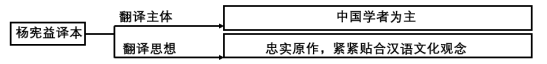
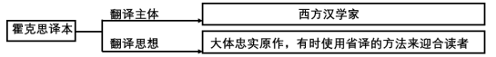
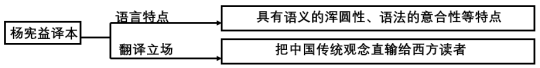
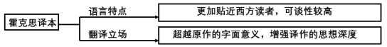

真题 · 论述类文本阅读
中国典籍的英译
导读
文体与题材：关于中国典籍英译的三则学术论述摘编。
作者：材料一署辛红娟，材料二署党争胜，材料三署杨乃乔。
内容脉络：材料一由外译现状和困难提出真实传播中国文化的目的与综合研究的要求；材料二围绕翻译思想比较两种艺术追求；材料三从文化立场和读者接受角度解释两种译本的差异。
主旨：典籍英译需要在真实传达中国文化、忠实再现原作艺术与促进域外理解之间作具体判断，不宜仅凭单一策略评价译本。
阅读重点：区分作者观点与被描述的译者立场，保留“最有可能”“之一”等限定，检查翻译目的、策略和效果之间的关系。
原文
原文按结构分节；随文内容可定位至对应段落。
现状与路径：典籍英译应真实传播中国文化并综合借鉴翻译经验。
中国学者进入典籍英译领域时间相对较晚，据现有汉学书目统计，中国典籍译本绝大多数是由西方汉学家或独立、或在中国合作者帮助下完成的。传教士以降的西方译者为中国典籍的异域传播做出了不可磨灭的贡献，但以往的西方译者翻译中国文化典籍时，大多采取迎合译语读者的翻译策略，翻译过程中曲解、误译中国文化之处比比皆是。此外，中国古代经典文本的语言具有语义的浑圆性、语法的意合性和修辞的空灵性这三大特点，使得绝大多数外国学习者难以在较短的时间内触及中华文化的内核。然而，典籍英译的主要目的，是向西方世界介绍真正的中国传统文化，促进中西文化交流和发展，让西方了解真正的中国。我们应当客观、公正地看待中国典籍翻译实践和接受之间的窘况与差距，从典籍翻译大家身上汲取翻译的智慧，获取前行的指导和力量。在这方面，对杨宪益、戴乃迭（英国籍）合译的与英国人霍克斯翻译的《红楼梦》译本的比较，是一个值得我们静下心来认真思考的课题。这两个译本于20世纪70年代出版，三位译者皆因此获得巨大声誉，也同时掀起了翻译界此后对两种译本经久不息的对比研究热潮。在这过程中，我们应深入了解中国典籍的外译事实，客观分析两种译本的优长与不足，将中国的本土经验和理论与西方翻译理论相结合，取其精华，让中国的翻译研究与实践在传承和发展的良性循环中获得升华，在实践中不断培养和提高我们讲述中国故事、构建中国话语体系的时代能力。
批注 1
批注
将中国的本土经验和理论与西方翻译理论相结合作者在比较译本的基础上提出综合借鉴的研究路径，注意区分译者经验、翻译理论和译本评价三个层面。
（摘编自辛红娟《中国典籍“谁来译”》）
比较：两位译者对忠实与艺术性的理解各有侧重。
翻译思想是决定译者翻译行为和翻译结果的主因，只有通过其翻译思想，读者才能理解其翻译过程中所采取的种种策略，也才能对这些策略所产生的译文进行更客观的评价。从霍克思的译本中可见，他对原文采取了大多时候“忠实不渝”、间或背信弃“意”的态度。为证此言，举个背信弃“意”的例子。《红楼梦》第一回中，曹雪芹用了一个较长的段落交代自己的写作目的，并说明选用“甄士隐”和“贾雨村”作为人物姓名的缘由，为读者理解整部小说进行铺垫。霍克思在其译本中大胆地省却了这段文字的翻译，直接从“列位看官：你道此书从何而来？”译起。霍克思的省译，显然不是漏译或者不能译，最有可能的原因，是霍克思对其译本艺术性的考量。为了实现译本与原著在艺术性方面的等值或者说最大程度的接近，霍克思将“忠实”的对象定位于篇章层面。杨宪益的翻译可以称之为“临摹式翻译”。“临摹”是初学书画之法，就是照着一幅书法或者绘画描其形而逮其神，最终达到与原作的惟妙惟肖。临摹者往往会将忠实原作视为自己对艺术的全部追求，杨宪益翻译的《红楼梦》正是这样一件艺术性高超的临摹作品。
札记 1
札记
霍克思将“忠实”的对象定位于篇章层面这里的“篇章层面”关联作者对省译动机的推测；理解两种翻译思想时，应同时追踪忠实对象和艺术追求。
（摘编自党争胜《霍克思与杨宪益的翻译思想刍议》）
辨析：两种译本采用不同文化立场与读者适应策略。
从当下国际学界关于两百年《红楼梦》翻译史及诸种译本的研究来看，大多数学者对杨译本和霍译本给予了充分的认可，学界就这两种译本的翻译技术性问题有着相当细致的讨论。然而我所感兴趣的不是翻译的技术性问题，而是这两位译家及两种译本的语言修辞、文化身份、翻译立场与翻译策略的差异性等问题。杨宪益译本的翻译立场与翻译策略更注重推动英语贴着汉语文化观念的地面行走，所以杨译本不可遏制地透露出把中国文化传统及其风俗观念直输给西方读者的翻译立场，这也是杨译本失去西方英语读者的重要原因之一。不同于杨译本，霍译本的翻译立场与翻译策略超越了汉语《红楼梦》的字面意义，而旨在探求汉英双语背后两种异质文化观念之间相互理解与解释的适应性。他使用西方本土读者谙熟且可以接受的地道的英语及其文化、风俗等观念，以此来创造性、补充性与生成性地重构《石头记》，从而完成了两种异质文化观念之间的转换生成。
评议 1
评议
翻译立场与翻译策略的差异性第三则材料侧重文化立场及读者接受，与第二则对艺术追求的讨论形成互补。
（摘编自杨乃乔《〈红楼梦〉与The Story of the Stone——谈异质文化观念的不可通约性及其翻译的创造性》）
第1题 · 图文信息对应
下列对材料相关内容的梳理，正确的一项是（3分）

图解文字：杨宪益译本：翻译主体→中国学者为主；翻译思想→忠实原作，紧紧贴合汉语文化观念

图解文字：霍克思译本：翻译主体→西方汉学家；翻译思想→大体忠实原作，有时使用省译的方法来迎合读者

图解文字：杨宪益译本：语言特点→具有语义的浑圆性、语法的意合性等特点；翻译立场→把中国传统观念直输给西方读者

图解文字：霍克思译本：语言特点→更加贴近西方读者，可读性较高；翻译立场→超越原作的字面意义，增强译作的思想深度
参考答案1展开 / 收起
参考作答
A。
审题与考查点
题目要求在四幅分支关系图中选出全部对应关系成立的一项。须同时核对译者、分类标签和右端内容，不能因某一分支正确就认可整图。
文本分析
A项：两条分支均有依据查看证据 ↗
本题参考答案选A。材料一说明杨宪益与英国籍戴乃迭合译，并未详述两人的分工；图中“中国学者为主”宜理解为对译者身份的概括，不宜据此推断具体工作占比。材料二把忠实原作作为杨译的艺术追求，材料三说明其紧贴汉语文化观念。
B项：省译动因被改写查看证据 ↗
“西方汉学家”和“大体忠实原作”有依据；但材料二把该次省译最可能的原因解释为艺术性考量，并未把它确定为迎合读者。图示将可能的艺术动因改成确定的迎合动因，B项不正确。
C项：把原文语言特点移给英译本查看证据 ↗
材料一的“浑圆性、意合性”等修饰“中国古代经典文本的语言”，不是专指杨宪益英译本。后一分支直输中国传统观念与材料三相合，但不能补救前一分支的对象错位，C项不正确。
D项：为文化转换添加思想深度的结论查看证据 ↗
霍译采用读者熟悉且可接受的地道英语，图示概括其可读性有依据。材料三所说“超越字面意义”旨在解决异质文化间的理解与解释，不能推出“增强译作的思想深度”，D项不正确。
知识点
多文本信息整合：把不同材料中针对同一对象的信息按主体、思想、语言和立场分类；合并后仍须保留各自限定。
解题方法
把每幅图展开为两条完整判断，逐条写出主语和谓语，再回到相应材料核验；最后选择两条判断都成立的图。
易误辨析
“迎合读者”不能仅因材料一出现过就移作霍克思该次省译的确定原因；“文化转换”也不等于思想深度超过原著。
答案组织与检核
检查图中两条分支，确认A无遗漏戴乃迭，B有动因改写，C有对象错位，D有无据添加；题干要求正确项，故选A。
第2题 · 概括与推断
下列对材料相关内容的概括和分析，正确的一项是（3分）
A．现有汉学书目的统计表明中国学者作为典籍翻译主体的比例并不高，这与我国学者进入典籍英译领域的时间相对较晚有关。
B．中国翻译界应该增加典籍翻译的数量，改变我国典籍主要由国外学者翻译的局面，这样才能增强构建中国话语体系的能力。
C．学界对杨译本和霍译本的比较并不在翻译的技术性层面，而主要集中在其翻译立场与翻译策略的差异性问题上。
D．近年来中国文化“走出去”所遇到的障碍，让本土的翻译经验与西方翻译理论孰优孰劣成为一个学者们竞相讨论的问题。
参考答案2展开 / 收起
参考作答
A。
审题与考查点
逐项检查概括是否保持原文的主体、因果强度和论述目的。A是结合开头语境作出的关联判断；B、C、D需检查额外条件或范围变化。
文本分析
A项：进入较晚与主体比例偏低的关联查看证据 ↗
材料一先说明中国学者进入领域较晚，随即用统计交代西方汉学家承担绝大多数译本。这一语境支持二者“有关”的弱关联判断；选项没有将其断言为唯一原因，A项成立。
B项：把数量增长设为必要条件查看证据 ↗
材料一提出的路径是了解外译事实、比较优长不足、结合中西理论并在实践中提高能力，没有将增加译本数量和改变翻译主体比例确立为“这样才能”的必要条件，B项不成立。
C项：把作者个人兴趣扩大为学界状况查看证据 ↗
材料三明说学界对技术性问题已有细致讨论，随后“我所感兴趣”才转向立场与策略等差异。选项否认前者并把个人兴趣扩成学界重心，C项不成立。
D项：竞争优劣的争论没有材料根据查看证据 ↗
材料一倡导结合中西翻译理论取其精华，提到的研究热潮是两种译本的对比研究；材料三的兴趣也是译本差异。材料没有叙述由“走出去”的障碍引发本土经验与西方理论孰优孰劣的争论，D项不成立。这里只能判定证据不足，不能进一步断言现实学界绝不会讨论这一问题。
知识点
因果推断：“有关”表达关联，不等于“唯一原因”；“这样才能”却把某条件提升为必要条件，应核验原文是否支持。
解题方法
圈出“有关”“才能”“学界”“竞相讨论”等关键限制，核对对应主体和关系，再区分合理概括与新添事实。
易误辨析
不要把“材料未提及”写成现实中绝不可能发生；也不要把A的弱关联误解成排他的因果判断。
答案组织与检核
A保留语境中的关联；B添加必要条件，C扩大主体范围，D补造争论及成因；答案应为正确项A。
第3题 · 论证与逻辑
下列对材料相关内容的分析和评价，正确的一项是（3分）
A．材料一分析了杨译本的长处和不足，指出应当客观公正地看待中国典籍翻译实践和接受之间的窘况与差距。
B．材料二使用“临摹”的概念，意在强调杨译本对于《红楼梦》的绝对忠实，这与霍译本的间或背信弃“意”形成了对比。
C．材料三认为只有完成两种异质文化观念转换生成的翻译者，才有可能创造性、补充性与生成性地重构《石头记》。
D．材料一提纲挈领，从总体述说中国典籍“谁来译”的问题，材料二和材料三则分而论之，三则材料呈现出总分的结构。
参考答案3展开 / 收起
参考作答
B。
审题与考查点
题目评价材料实际完成的论述、使用的概念和相互关系。应区分“提出研究要求”与“已经展开研究”，并检验“只有……才”的方向。
文本分析
A项：把倡议误作已完成的分析查看证据 ↗
材料一要求“客观分析两种译本的优长与不足”，但并未具体列出杨译本的优长不足。“应分析”不能改成“已分析”，A项不正确。
B项：“临摹”突出忠实追求并构成对比查看证据 ↗
材料二以描形逮神、惟妙惟肖解释临摹，并称忠实原作为杨译的全部艺术追求，和霍译间或背信弃“意”形成对比。原项的“绝对忠实”应理解为该段所强调的翻译追求，不能据此扩张为已经逐字检验全部译文、证明毫无偏差的事实；按材料的论述意图，B项正确。
C项：把结果倒置为先决条件查看证据 ↗
材料三的顺序为使用可接受的英语及文化观念→创造性重构→完成文化转换。选项把最后的转换结果设为创造性重构的必要前提，原文不支持，C项不正确。
D项：把主题关联等同于总分结构查看证据 ↗
材料一讨论外译目的与研究态度，材料二分析翻译思想与艺术追求，材料三比较文化立场和策略。三者围绕相近主题互相补充，但材料二、三并未依次展开材料一提出的“谁来译”的下位分论点，不能认定为总分结构。
知识点
论证层次：总分结构要求分说部分展开总说部分确定的方面；共同主题或材料排列顺序不足以单独证明总分关系。
条件关系：“只有A才B”把A设为B的必要条件；不能由“通过B形成A”的过程直接推出。
解题方法
先用动词概括各材料实际在做什么，再检验选项中的“分析了”“强调”“只有”“总分”是否准确。
易误辨析
“绝对忠实”在此强调艺术追求，并不表示已经证明译本每个字句都毫无误差。D的错误理由是缺乏总分的论证对应，也不能据此断定三则只能是严格并列。
答案组织与检核
A混淆倡议与已做，C倒置过程，D误判整体结构；B与材料对“临摹”的阐释吻合。
第4题 · 比较译文艺术观
请根据材料二，简要说明杨宪益与霍克思对译文艺术性的理解有何不同。（4分）
参考答案4展开 / 收起
参考作答
- 杨宪益把忠实原作视为全部艺术追求，以“临摹”方式描形逮神，力求译文与原作形神相似。
- 霍克思追求译本与原著在整体艺术性上的等值或最大程度接近，把忠实的对象定位于篇章层面；因此可为整体艺术效果对局部文字作省译。
审题与考查点
范围限定材料二，对象是两人如何理解“艺术性”。需要在同一比较维度上分别说明忠实对象、艺术目标及相应做法，不转答谁更优秀。
文本分析
杨宪益：以形神相似实现忠实原作查看证据 ↗
材料把“临摹”解释为描形逮神、达到惟妙惟肖，随后把忠实原作视为全部艺术追求。由此可概括杨译的艺术性建立在对原作形与神的忠实再现上。
霍克思：着眼篇章整体的艺术等值查看证据 ↗
省去开头交代文字是例子，艺术性考量是材料提出的最可能解释；“篇章层面”的忠实才是总体目标。因此可说他允许局部处理服从整体艺术效果，不可改成完全不忠实，也不宜把“最有可能”写成已经证实的个人动机。
知识点
比较阅读：比较要统一维度；本题的维度是怎样通过“忠实”实现艺术性，而非译者国籍或市场接受度。
解题方法
分别找出两人的“艺术性”“忠实”所在语句，再把例子归入目标：杨译描形逮神；霍译整体等值、局部可调。
易误辨析
霍克思“大多时候忠实不渝”不能删成总是背离原著；杨译临摹包含“逮其神”，不能贬作机械逐字翻译。
答案组织与检核
两条分别落到一位译者；每条同时说明目标和体现方式；只据材料二，不加入未经该材料支持的销量和读者评价。
第5题 · 综合评价标准
评价一部中国典籍译本是否优秀，可以有哪些标准？请结合材料进行概括。（6分）
参考答案5展开 / 收起
参考作答
- 文化传播：能否准确传达中国传统文化，减少曲解、误译，帮助域外读者理解真实的中国。
- 忠实与艺术性：能否在忠实原著的基础上再现作品的艺术效果，妥善处理局部文字与篇章整体的关系，具有与翻译目标相适应的艺术表现力。
- 读者接受与文化交流：译语能否为目标读者理解和接受，促成不同文化观念之间的理解与交流。
审题与考查点
把三则材料中的目的、优长、问题和评价转换为可用于审视其他典籍译本的标准。题目问“可以有哪些”，应概括合理维度，不虚构官方逐点分值。
文本分析
文化传播：准确传达而少曲解查看证据 ↗
材料一既指出曲解、误译的问题，又明确典籍英译的主要目的。把正反两面结合，可得准确传播传统文化这一标准。
忠实与艺术性：再现原著的艺术价值查看证据 ↗
材料二肯定杨译的忠实与艺术性，也说明霍译追求篇章层面的艺术等值。可综合为忠实基础上的艺术表现与适当创造，而不能把删改或创新多少直接当作优秀程度。
读者接受与交流：使异质文化相互理解查看证据 ↗
材料三一面说明文化观念直输可能损失读者，一面分析霍译使用可接受的英语促进文化转换。由此可概括目标读者的理解和接受，以及能否达成文化交流。接受度必须与真实传达共同考察，不能把迎合读者或商业销量单独当作标准。
知识点
主观题要点概括：把具体对象的优缺点提升为评价维度，再用“能否……”表述可检验标准，保留每一维度的文本依据。
多文本阅读：合并同类信息时保持三则材料的侧重，文化传播、艺术表现、读者接受各回答不同问题。
解题方法
材料一提取目的与偏差，材料二提取忠实和艺术追求，材料三提取接受与文化转换；将相近信息归并为三条评价维度。
易误辨析
创造性需服务于原著艺术与文化传达，不能要求所有优秀译本都必须大量改写。材料三是对两种译本的分析，不能据其一条评价把杨译本整体判为失败。
答案组织与检核
三条覆盖真实性、艺术性和交流效果；每条用“能否”或等价标准表达；避免只罗列译者做法、重复写文化传播，或加入材料没有提供的商业排名。
参考文献
2022年新高考全国Ⅱ卷；原卷第1—5题。
（摘编自辛红娟《中国典籍“谁来译”》）
（摘编自党争胜《霍克思与杨宪益的翻译思想刍议》）
（摘编自杨乃乔《〈红楼梦〉与The Story of the Stone——谈异质文化观念的不可通约性及其翻译的创造性》）